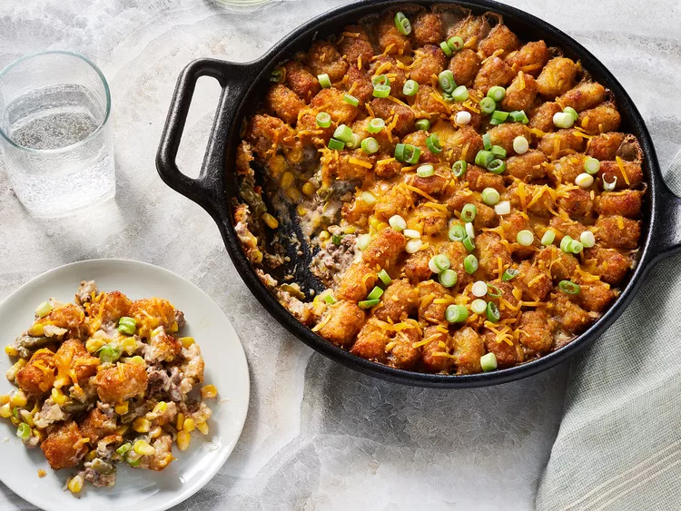

Tater Tot Hotdish

This one pot tater tot hotdish is the ultimate comfort food: Crispy pillowy tater tots are paired with ground beef, cream of mushroom soup, green beans, and sweet corn.
Ingredients
- 2 tablespoons olive oil
- 2 cups chopped yellow onion
- 1 pound ground chuck beef (80% lean)
- 1/2 teaspoon garlic powder
- 1/2 teaspoon onion powder
- 1/2 teaspoon black pepper
- 2 (10.5 ounce) cans condensed cream of mushroom
- 2 cups frozen cut green beans, thawed
- 2 cups frozen sweet corn, thawed
- 1 1/2 pounds frozen tater tots
- 1/4 teaspoon seasoned salt (such as Lawry's
- 1/2 cup shredded sharp cheddar cheese
- 2 small scallions, thinly sliced
Directions
-
Preheat the oven 400 degrees F (200 degrees C)
-
Set a large deep cast iron skillet over medium-high heat. Add olive oil and swirl to coat skillet evenly. Add onions to skillet in one even layer; top with ground beef, breaking it up into small pieces. Cook undisturbed until onions are translucent, about 2 minutes. Stir beef and onions until well combined and cook until beef is cooked through and browned, stirring occasionally, 3 to 4 minutes longer
-
Reduce heat to medium. Season beef with garlic powder, onion powder, and black pepper. Cook, stirring often, for 1 more minute. Remove from heat. Add cream of mushroom soup, green beans, and corn; stir until well combined.
-
Toss tater tots and seasoned salt in a bowl to combine. Arrange tater tots decoratively over beef mixture in the skillet, avoiding large gaps between tater tots.
-
Bake in preheated oven until tater tots are golden and crisp, about 1 hour. Sprinkle with cheese and scallions; cool 10 minutes before serving.